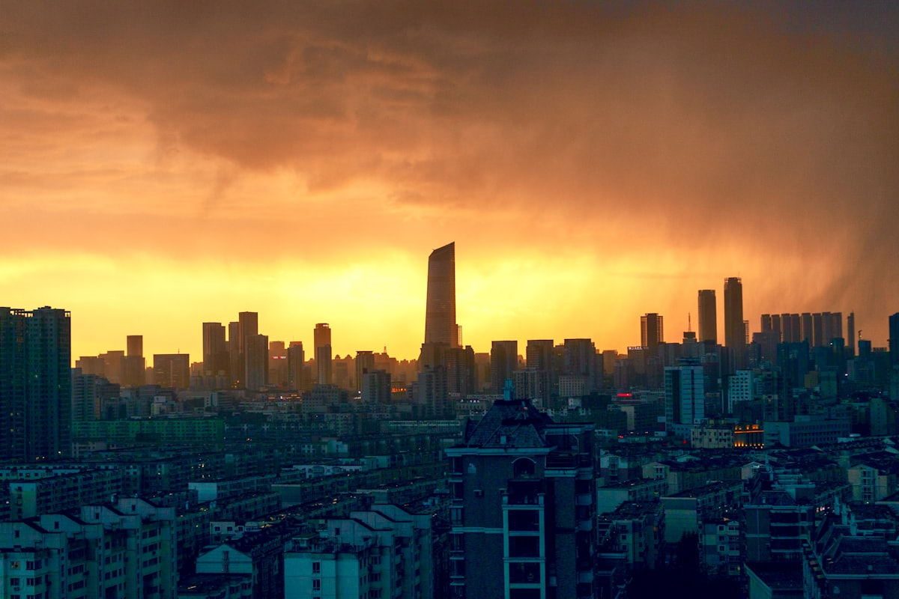
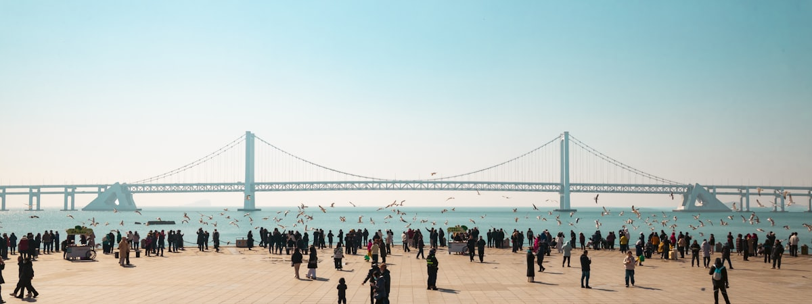
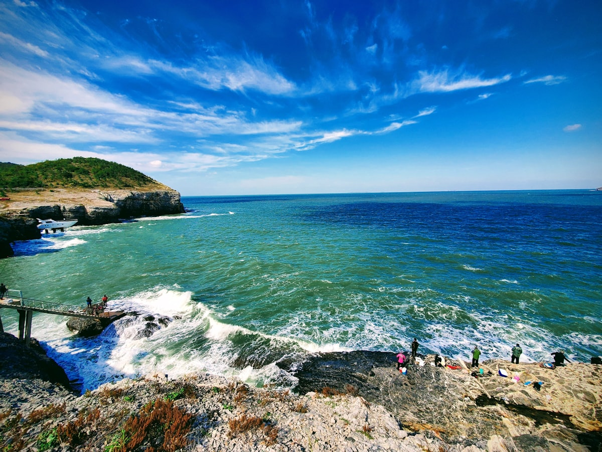
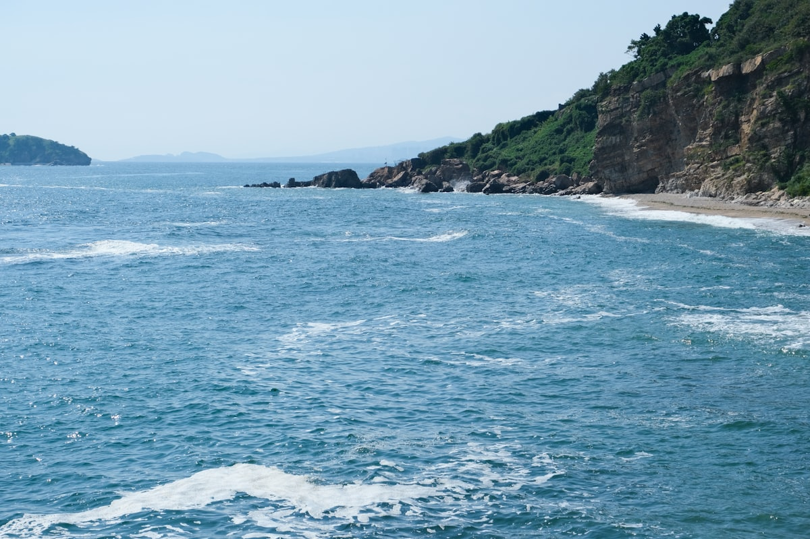
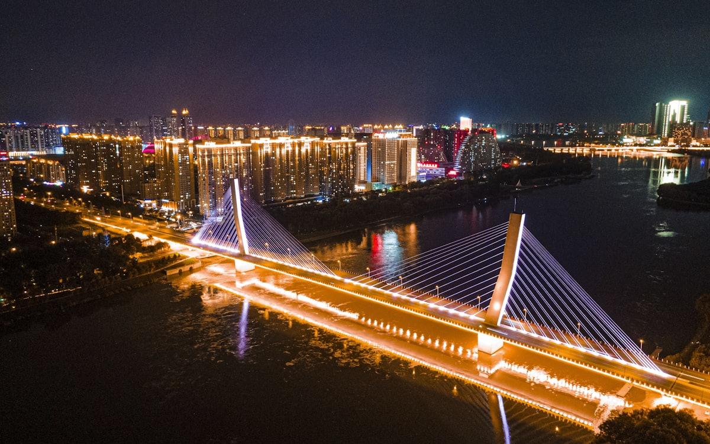

| 事项 | 结论 |
|---|---|
| 事项 | 结论 |
| 推荐方案 | 10 天 9 晚（沈阳 3 晚 + 大连 3 晚 + 丹东 2 晚 + 返程） |
| 返程约束 | 第 10 天从沈阳返程，航班/高铁较全 |
| 行程链 | 沈阳故宫 → 大连海滨 → 丹东断桥 → 回沈阳收尾 |
| 预算（人均） | 经济 3500–4500 ／ 标准 5500–7000 ／ 舒适 9000–12000 |
| 三件提前事 | ① 旺季（暑期/十一）提前订大连海景房 ② 故宫与帅府网上购票 ③ 丹东边境游带好身份证（可能查证） |
| 季节提醒 | 夏秋最佳；冬季大连海风冷、沈阳 -15℃；七八月海滨人多，五六月最舒服 |
| 交通卡 | 沈阳/大连地铁支持扫码进站，城际用高铁票 |
以下为 10 天 9 晚的推荐节奏。城际移动尽量放上午，下午留给景点；大连海边记得防风防晒。
| 日期 | 行程 | 过夜地 | 主题 |
|---|---|---|---|
| D1 抵沈阳 | 入住中街/太原街，傍晚中街步行街 + 沈阳故宫外观 | 沈阳中街 | 抵达 + 预热 |
| D2 | 沈阳故宫（全天）→ 张氏帅府 → 中街夜景 | 沈阳中街 | 盛京清都 |
| D3 | 沈阳（北陵公园/九一八纪念馆）→ 高铁赴大连 | 大连市区 | 沈阳人文 |
| D4 | 星海广场 → 星海湾大桥 → 滨海路 → 东港夜景 | 大连星海 | 滨海漫步 |
| D5 | 棒棰岛 → 老虎滩海洋公园 → 渔人码头 | 大连滨海 | 海滨乐园 |
| D6 | 大连金石滩地质公园（全天，可选发现王国） | 大连市区 | 地质海岸 |
| D7 | 大连 → 高铁赴丹东，下午鸭绿江断桥 + 江边夜景 | 丹东江畔 | 中朝边境 |
| D8 | 凤凰山（或虎山长城）→ 抗美援朝纪念馆 | 丹东江畔 | 边境山水 |
| D9 | 丹东 → 回沈阳，西塔/老边饺子，自由购物 | 沈阳中街 | 收尾回程 |
| D10 返程 | 上午自由活动，下午从沈阳返程 | — | 回家 |
以下为 10 天全程的逐小时执行时间线，可当作「当天打开照着走」的清单。标注 ※ 的可选项视体力与天气取舍。
| 时间 | 事项 |
|---|---|
| 14:00–17:00 | 抵达沈阳（高铁到沈阳站/沈阳北，飞机到桃仙机场，地铁进城） |
| 17:30–18:30 | 入住中街一带，放下行李 |
| 19:00–21:00 | 中街步行街：故宫外墙夜景、中街大果（雪糕）、沈阳老字号晚餐 |
| 21:00 | 回酒店休息 |
| 时间 | 事项 |
|---|---|
| 08:30–12:00 | 沈阳故宫（参考价 60 元）：东路大政殿、十王亭，西路文溯阁，比北京故宫小而紧凑，半天可细逛 |
| 12:00–13:00 | 故宫附近午餐：老边饺子或锅包肉 |
| 13:30–16:00 | 张氏帅府（参考价 45 元，含赵一荻故居）：张学良旧居，大青楼、小青楼 |
| 16:30–18:00 | 沈阳金融博物馆（帅府旁，可选）或回中街逛吃 |
| 19:00 | 中街夜市：烤串、老边饺子、中街大果 |
| 时间 | 事项 |
|---|---|
| 08:30–11:00 | 九一八历史博物馆（免费，周一闭馆）：铭记历史，馆内陈列震撼 |
| 11:30–13:00 | 午餐：西塔朝鲜族美食街（烤肉/冷面） |
| 13:30–15:30 | 北陵公园（清昭陵）（参考价 40 元）：沈阳最大陵园，皇家园林 |
| 16:00–19:00 | 高铁沈阳→大连（约 2h，二等座约 180–230 元），入住星海一带 |
| 19:30 | 晚餐：大连海鲜，星海广场夜游 |
| 时间 | 事项 |
|---|---|
| 08:30–11:00 | 星海广场（免费）：亚洲最大城市广场之一，百年城雕、华表广场，可喂海鸥 |
| 11:00–12:30 | 星海湾大桥（免费）：滨海步道看大桥与海，可骑行 |
| 13:00–14:00 | 午餐：海胆饺子、烤鱿鱼 |
| 14:30–17:00 | 滨海路（免费）：傅家庄—燕窝岭段徒步/骑行，海景栈道 |
| 18:00–20:00 | 东港商务区：大连国际会议中心夜景，音乐喷泉（夏季） |
| 时间 | 事项 |
|---|---|
| 08:30–11:30 | 棒棰岛景区（参考价 20 元）：海水清澈、礁石海岸，大连人自己的海边 |
| 12:00–13:00 | 午餐：海边渔家乐 |
| 13:30–17:00 | 老虎滩海洋公园（参考价 220 元）：极地馆、海豚表演、珊瑚馆 |
| 17:30–19:00 | 渔人码头：欧式风情街区，傍晚看日落，晚餐 |
| 19:30 | 回酒店休息 |
| 时间 | 事项 |
|---|---|
| 08:30–12:00 | 金石滩国家地质公园（参考价 70–100 元）：龟裂石、恐龙探海，亿万年海蚀地貌 |
| 12:00–13:00 | 金石滩镇上午餐 |
| 13:30–17:00 | 金石滩十里黄金海岸（免费）：沙滩玩水；或大连发现王国主题乐园（参考价 200+，二选一） |
| 18:00–19:30 | 回市区晚餐 |
| 20:00 | 休息，准备明日赴丹东 |
| 时间 | 事项 |
|---|---|
| 08:00–10:30 | 高铁大连→丹东（约 2h，二等座约 110–140 元），入住江畔 |
| 11:30–13:00 | 午餐：朝鲜风味餐（冷面、打糕、烤串） |
| 13:30–16:30 | 鸭绿江断桥（参考价 30 元）：断桥中段观朝鲜新义州，桥下江边步道散步 |
| 16:30–18:00 | 抗美援朝纪念馆（免费，周一闭馆）：了解那场战争的历史 |
| 19:00 | 鸭绿江边夜景：灯光下的断桥与对岸 |
| 时间 | 事项 |
|---|---|
| 08:00–12:00 | 凤凰山（参考价 80 元，含电瓶车另计）：玻璃栈道、老牛背，丹东第一名山 |
| 12:00–13:00 | 山下简餐 |
| 13:30–16:30 | 虎山长城（参考价 60 元，可选）：明代长城东端起点，登城望朝鲜 |
| 17:00–18:30 | 回丹东市区晚餐：黄蚬子、焖子 |
| 19:00 | 江边散步，休息 |
| 时间 | 事项 |
|---|---|
| 08:30–10:00 | 上午自由：丹东江边晨景、购买朝鲜族特色伴手礼 |
| 10:30–12:30 | 高铁丹东→沈阳（约 1.5h，二等座约 90–120 元），入住中街 |
| 13:00–14:00 | 午餐：沈阳西塔烤肉或老边饺子 |
| 14:30–17:00 | 自由购物：中街、太原街，买不老林糖、沟帮子熏鸡等伴手礼 |
| 19:00 | 晚餐，收拾行李 |
| 时间 | 事项 |
|---|---|
| 08:30–11:30 | 自由活动：中街补货，吃最后一顿锅包肉/冷面 |
| 11:30–12:30 | 午餐 |
| 13:00–16:00 | 退房，赴沈阳站/桃仙机场，返程 |
| 16:30 | 抵达出发地，结束辽宁 10 天行程；锅包肉/冷面特产注意携带 |
必去（必去）/ 顺路（顺路）/ 可跳过（可跳过）。

顺路
必去
必去
顺路
必去图片为 Unsplash 主题图（沈阳、大连、丹东主题），用于页面配图。更多免费好去处：沈阳北陵公园、大连星海广场、丹东鸭绿江公园。
点击左侧节点可在地图上定位；点击地图 marker 会高亮对应节点。坐标为 WGS-84 转 GCJ-02 纠偏后标注。
以下为单人、不含购物的估算；门票为参考价，以现场为准。交通按高铁往返（从华北出发约 1000–1400 元），不同出发地浮动较大。
| 项目 | 经济（3500–4500） | 标准（5500–7000） | 舒适（9000–12000） |
|---|---|---|---|
| 往返交通 | 高铁约 900–1400 | 高铁/飞机约 1500–2500 | 飞机+接送约 3000–4000 |
| 城际（省内） | 高铁约 400–550 | 高铁+打车约 700–1000 | 包车/专车 1500–2500 |
| 住宿（9 晚） | 青旅/快捷 800–1200 | 连锁酒店 1800–2700 | 大连海景星级 4500–6500 |
| 门票 | 基础景点约 350 | 含老虎滩等约 550 | 全含 + 演出约 900 |
| 餐饮（10 天） | 600–850 | 1200–1600（含海鲜） | 2000–2800（海鲜大餐） |
| 市内交通 | 地铁+公交 150–200 | 地铁+打车 300–450 | 打车/包车 600–1000 |
带娃推荐：大连发现王国（全天）、老虎滩海洋公园（半天）、金石滩沙滩；减少凤凰山等登山行程，城际尽量上午出发。
9–11 月大连海鲜肥美、人少；冬季沈阳 -15℃，故宫雪景绝美但冷，大连海风刺骨，带足保暖。酒店价格比暑期低 30–50%。
| 方式 | 时长 | 参考价 | 备注 |
|---|---|---|---|
| 高铁（推荐） | 北京→沈阳 2.5–3.5h | 二等座 300–350 元 | 沈阳站/沈阳北，班次密集 |
| 飞机 | 北上广深等直达 2–4h | 500–2000 元 | 沈阳桃仙、大连周水子两机场 |
| 高铁（大连线） | 北京→大连 4–6h | 二等座 400–600 元 | 也可先到沈阳再南下 |
| 区域 | 价格/晚 | 优点 | 短板 |
|---|---|---|---|
| 沈阳中街 | 快捷 250–400 / 星级 600–1200 | 近故宫、帅府，地铁 1 号线 | 旺季人多 |
| 大连星海/青泥洼 | 快捷 300–500 / 海景 700–1500 | 近星海广场与地铁 | 海景房暑期贵 |
| 大连东港 | 公寓/酒店 400–800 | 新城区、夜景好、安静 | 餐饮选择少 |
| 丹东江畔 | 快捷 200–350 | 步行到断桥，边境氛围浓 | 酒店整体偏旧 |